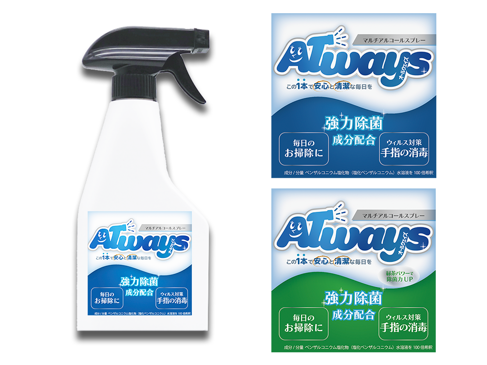

アルコール除菌スプレー
『Always』
パッケージデザイン

- 概要
-
職業訓練校の課題の一環で教室で使用しているアルコール除菌スプレーのラベルの制作を行いました。本来の商品名は『オスバン』、使用用途としては、日常の掃除と手の除菌。
【現状の課題】
- 『オスバン』という商品名から使用用途がわからない。
- 本来の使い方（手の除菌）が周知されておらず掃除でしか使用されない為、なかなか量が減らない。
- ターゲット層
- 職業訓練校似通っている生徒
- 目的・ゴール
- 本来の使用用途を理解してもらい、消費に繋げる。
- コンセプト
- 私たちの生活にいつも寄り添ってくれる、体にも使えて、親しみやすいスプレー
- 制作ポイント
-
『いつでも使える万能なスプレー』をイメージしてもらえる ”always”という名前にしました。
優しさと清潔感が伝わるよう、全体的に青色をベースに丸い形状のデザインにしました。スプレーがウィルスを除菌するイメージから、白い泡のようなデザインを意識しました。
商品ロゴの"A" の文字は、コンセプトの『いつでも頼れる優しいクリーナー』から常に私たちを優しくサポートしてくださる職業訓練校の女性の講師を表現し、可愛らしくて親しみやすいキャラクターにしました。スプレー洗剤であることを一目で分かるように、スプレーとキラキラのデザインをあしらいました
- 制作期間
- 4時間
- 使用ツール
- Illustrator